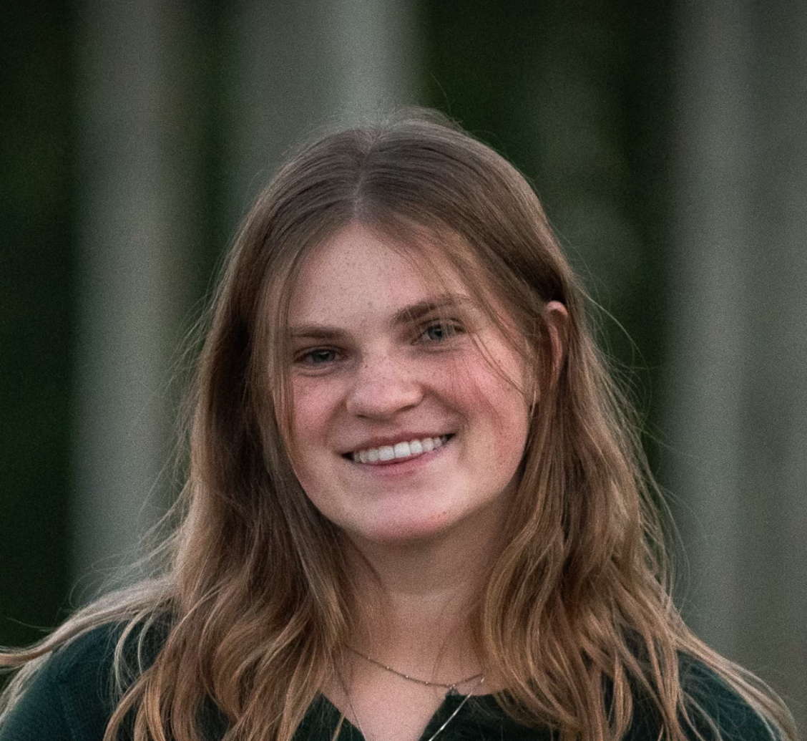
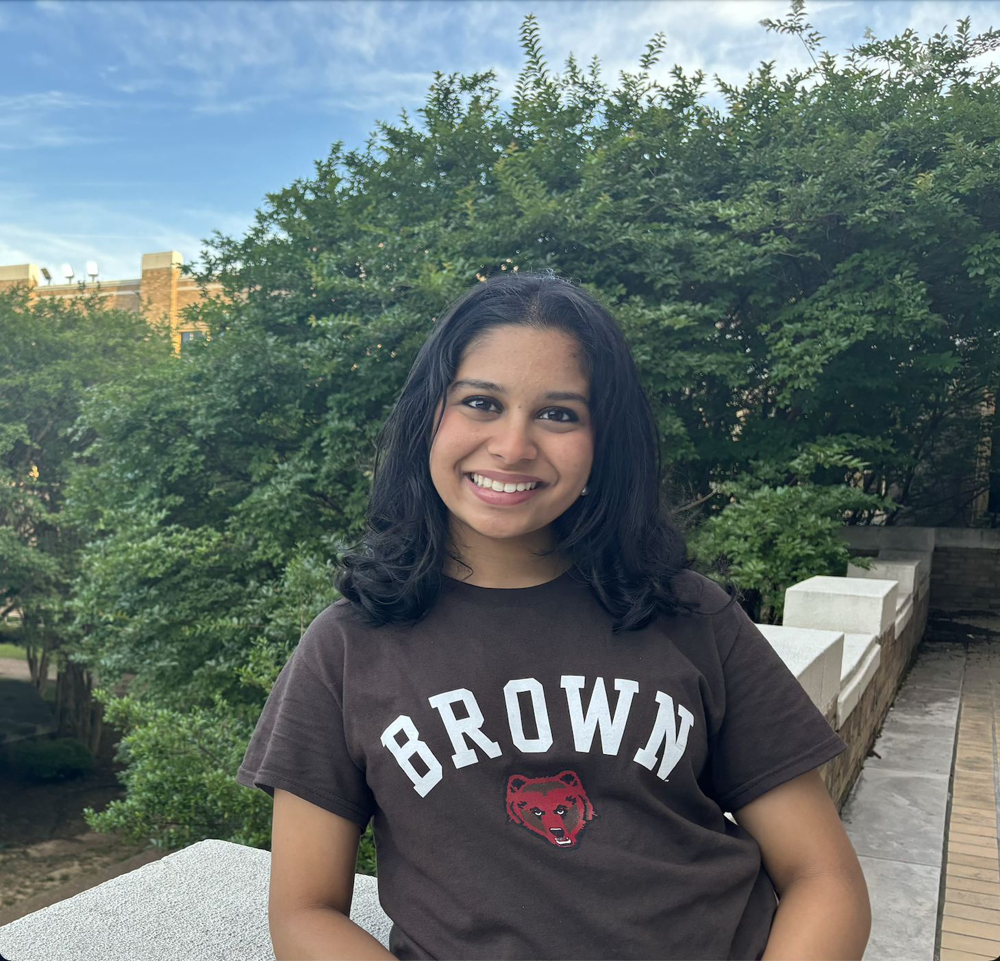
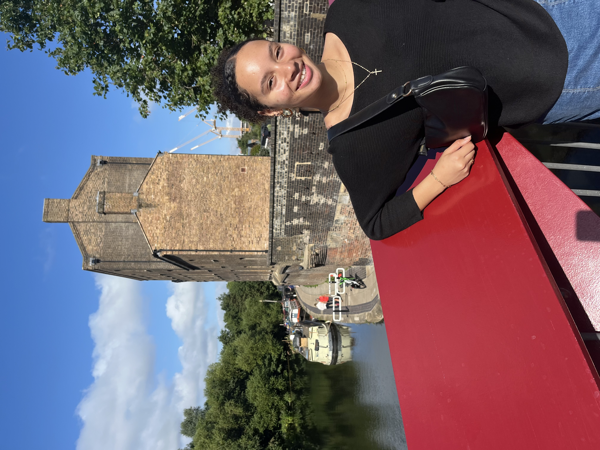
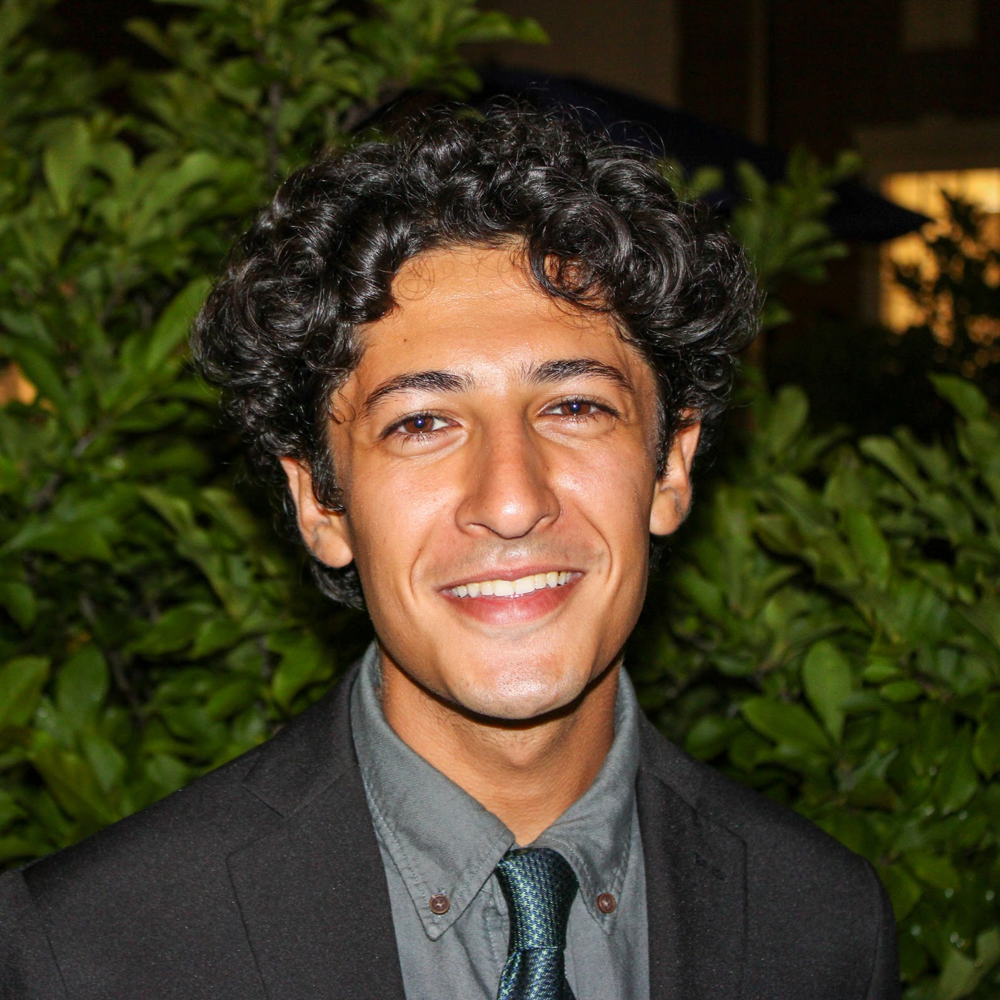
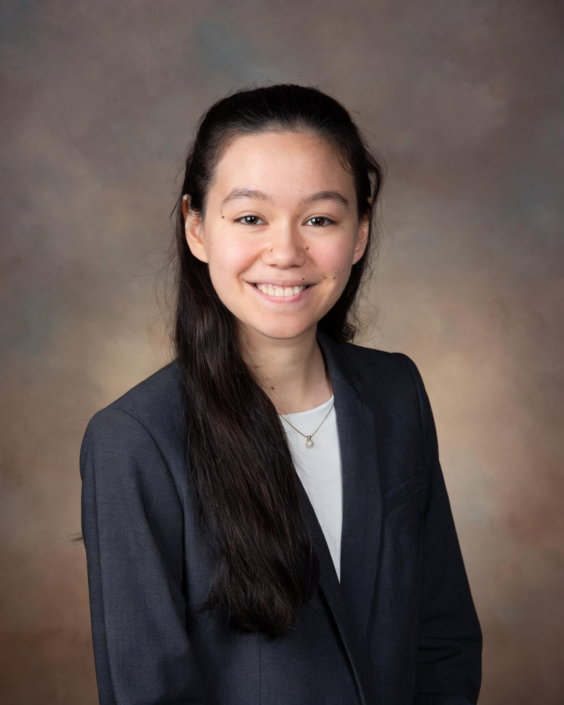
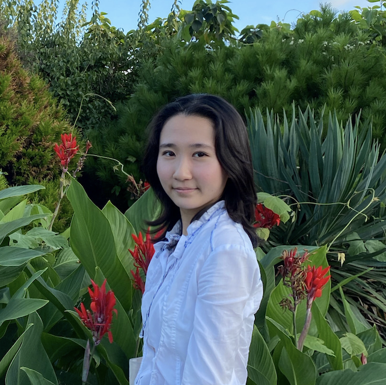
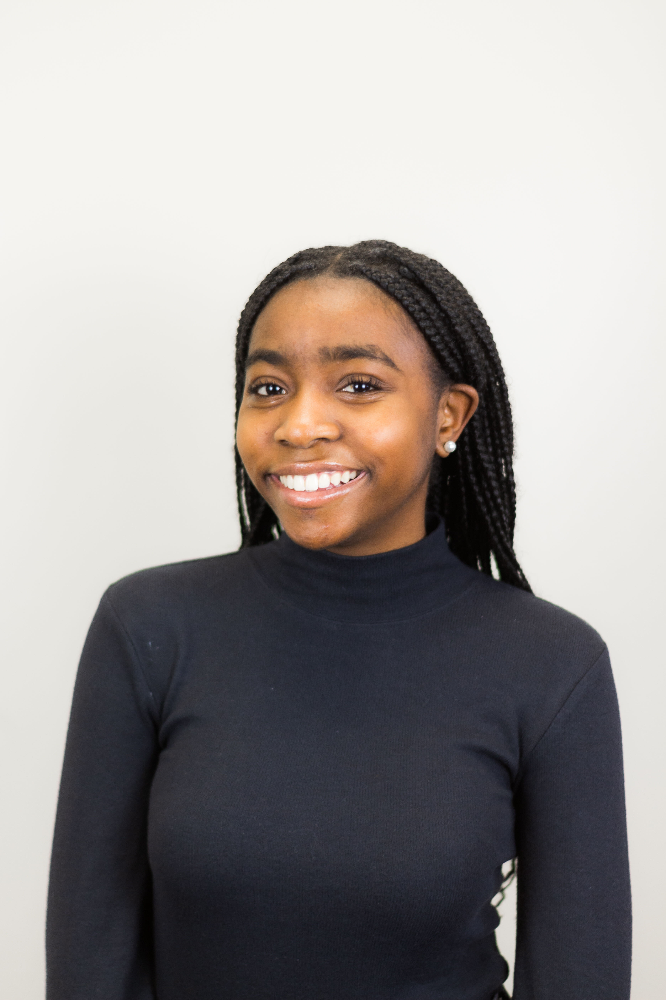
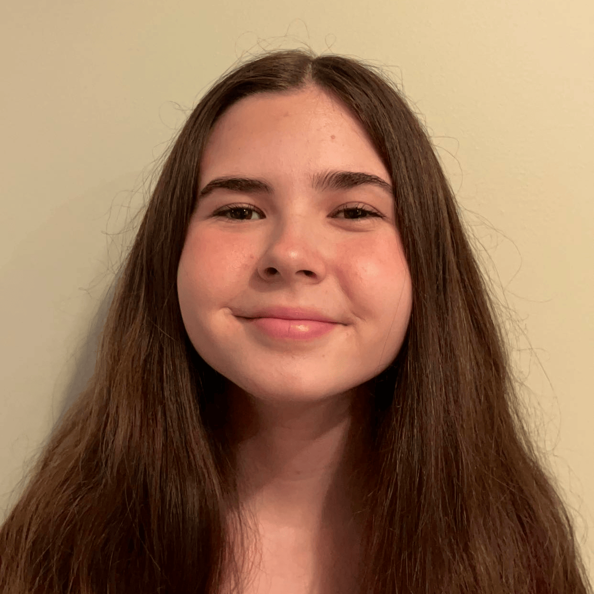
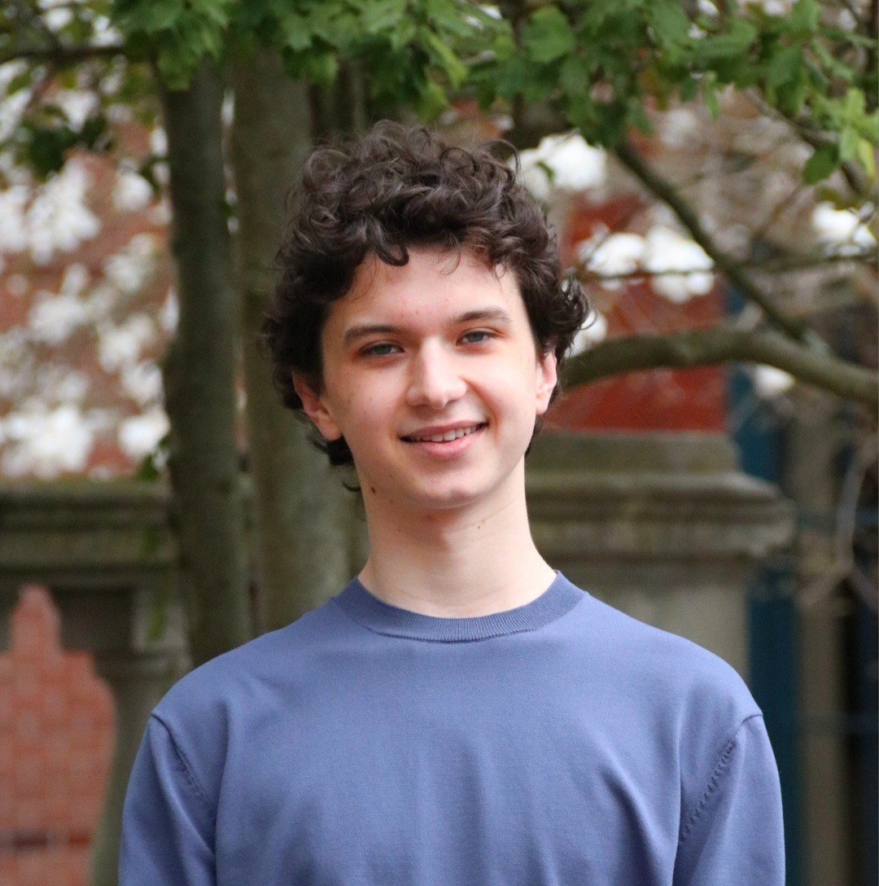

Meet our Team
Leadership
President
Tiziano Pardo '28
Applied Mathematics - Economics & International and Public Affairs

Vice President of Research
Riya Srinivasan '27
Political Science

Vice President of Project Development
Natalie Thayer '27
International and Public Affairs
Co-Leads
HOME Co-Lead
Colin Carter '27
International and Public Affairs
HOME Co-Lead
Christian Davis '27
Political Science & History

CPSP Co-Lead
Ananya Uddanti '28
International and Public Affairs & Health and Human Biology
CPSP Co-Lead
Gavin Li '28
Biochemistry and Molecular Biology

Multilingual Education Co-Lead
Maria Camacho '27
Education
Multilingual Education Co-Lead
Brianna Paliz '27
Political Science & Social Analysis and Research

Food Security Co-Lead
Claire Piron '28
International and Public Affairs & Public Health
Food Security Co-Lead
Shant Ispendjian '28
International and Public Affairs
Digital Equity Co-Lead
Amber Zhao '27
International and Public Affairs
Digital Equity Co-Lead
Siddharth Nareddy '28
Computational Biology & International and Public Affairs
Senior Policy Advisor
Junkai Gong '27
International and Public Affairs
Analysts
HOME Analyst
Connor Swenson '27
Political Science
HOME Analyst
Amelia Ruedaflores '28
International and Public Affairs
HOME Analyst
Ciara Leonard '28
Economics & Urban Studies
HOME Analyst
Lena Yan '29
International and Public Affairs
HOME Analyst
Sadie Springer '28
Political Science
HOME Analyst
Aura Sukapanpotharam '29
Computational Biology & Entrepreneurship
HOME Analyst
Austin Dunbar '29
Applied Mathematics - Economics
HOME Analyst
Samrah Syed '29
International and Public Affairs
HOME Analyst
Cezario Caram Filho '27
Economics & International and Public Affairs
CPSP Analyst
Isha Kapoor '28
Public Health & Public Policy Economics
CPSP Analyst
Ben Huang '29
Chemistry & Biology
CPSP Analyst
Khadija Buke '28
Immunology & Public Health
CPSP Analyst
Hrishit Dhulia '28
Economics & International and Public Affairs
CPSP Analyst
Ryan MacPhee '29
Business Economics
CPSP Analyst
Ciara Marcado-Alvarez '27
Neuroscience
CPSP Analyst
Sophia Leng '28
Cognitive Neuroscience
CPSP Analyst
Jasmine Liu '29
Economics & Public Health
CPSP Analyst
Kevin Si '29
Biostatistics
CPSP Analyst
Srijith Rangan '29
Biology & Economics

Multilingual Education Analyst
Luca Raffa '28
History
Multilingual Education Analyst
Sebastian Dias-Sotiriou '28
Economics + CS & International and Public Affairs
Multilingual Education Analyst
Lily Luby '28
International and Public Affairs & Environmental Sciences and Studies
Multilingual Education Analyst
Anurag Bhat '28
Environmental Chemistry
Multilingual Education Analyst
Sam Challu '29
Applied Mathematics - Economics & International and Public Affairs
Multilingual Education Analyst
Maya Martinez '28
Classics & Comparative Literature

Overdose Prevention Analyst
Samuel Eskander '28
Health and Human Biology
Overdose Prevention Analyst
Zoe Kaufman '27
Political Science
Overdose Prevention Analyst
Shiven Batra '29
International and Public Affairs & Statistics
Overdose Prevention Analyst
Atman Shah '28
International and Public Affairs & Chemistry

Overdose Prevention Analyst
Emma Capaldi '29
Biomedical Engineering
Overdose Prevention Analyst
Arian Lagarija '28
Biochemistry
Overdose Prevention Analyst
Aayush Muthaswamy '28
Public Health
Overdose Prevention Analyst
Ivan Sun '29
Human Biology & Economics
Overdose Prevention Analyst
Meray Nemr '28
Neuroscience & Music
Overdose Prevention Analyst
Ramya Rajan '29
Applied Mathematics & Economics

Digital Equity Analyst
Emma Jeong '27
Business Economics
Digital Equity Analyst
Julia Belle Reyfman '27
International and Public Affairs
Digital Equity Analyst
Daniel Shin '27
Economics & International and Public Affairs
Digital Equity Analyst
Elina Coutlakis '28
Economics & International and Public Affairs
Digital Equity Analyst
Joy Zou '29
Computer Science & International and Public Affairs
Digital Equity Analyst
Madison Olds '28
Computer Science & International and Public Affairs
Digital Equity Analyst
Joshua Reeds '29
Political Science & Applied Mathematics
Digital Equity Analyst
Wilber Anterola '29
Computer Science & International and Public Affairs
Food Security Analyst
Emilie Holmes '29
Public Health
Food Security Analyst
Cecilia Cheng '28
Economics & Public Health
Food Security Analyst
Hawwi Jebena '29
International and Public Affairs
Food Security Analyst
Branden Kim '28
Computational Neuroscience & Philosophy
Food Security Analyst
Sena Williams '29
Applied Mathematics & International and Public Affairs
Food Security Analyst
Brandon Yu '28
Computer Science
Mental Health Analyst
Porter Culp '28
Public Health & Economics
Mental Health Analyst
Olivia Raymond '28
Public Health & Public Policy Economics
Mental Health Analyst
Kenneth Rhee '27
Neuroscience
Mental Health Analyst
Esha Saraswat '27
Public Health & Health and Human Biology
Mental Health Analyst
Anika Alla '28
STS & Visual Arts
Confession Accountability Analyst
Shaochi Chuang '28
Political Science & Environmental Studies

Confession Accountability Analyst
Ava McKie '28
International and Public Affairs & Education
Confession Accountability Analyst
Nash Riebe '27
Political Science & Philosophy
Community Health Analyst
Louis Boyang '27
Economics-Public Policy
Notable Alumni

President Emeritus
Lily Zamora '26
Political Science & Economics
Past Confession Accountability Co-Lead
Julian Cohen ‘26
History & IAPA
Past Confession Accountability Co-Lead
Marissa Scott '26
IAPA & Visual Arts

Past Confession Accountability Co-Lead
Tia Williams ‘27
Political Science & Economics
Past Multilingual Education Co-Lead
Kayla Morrison '26
Political Science & Social Analysis and Research

Past Multilingual Education Co-Lead
Marcelo Rodriguez Parra '26
CS-Economics & International and Public Affairs
Past Overdose Prevention Co-Lead
Joshua Ellsworth '28
International and Public Affairs
Past Overdose Prevention Co-Lead
Turner Lie-Nielsen '28
International and Public Affairs & Classics

Past Community Health Co-Lead
AJ Wu '26
Computer Science & Economics
Past Mental Health Co-Lead
Zuleika Dewan ‘27
Computational Bio & International and Public Affairs

Past Mental Health Co-Lead
Caroline O'Brien ‘27
Neuroscience

Past Mental Health Co-Lead
Maia Eng '26
International and Public Affairs

Past Digital Equity Co-Lead
Nicolaas Schmid '27
Political Science
Past BIPTA Lead
Maddock Thomas '26
Critical Theory and Political Economy & Urban Studies